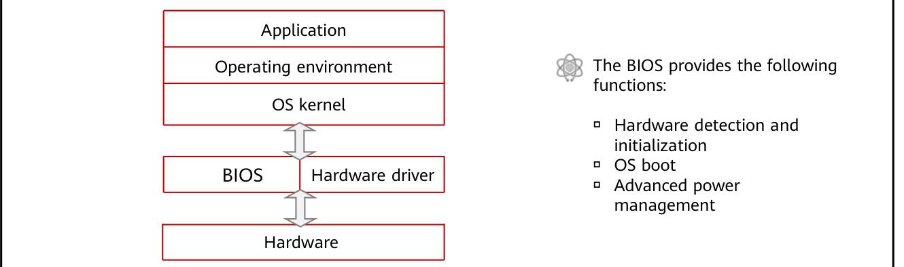
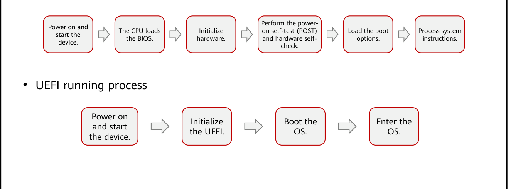
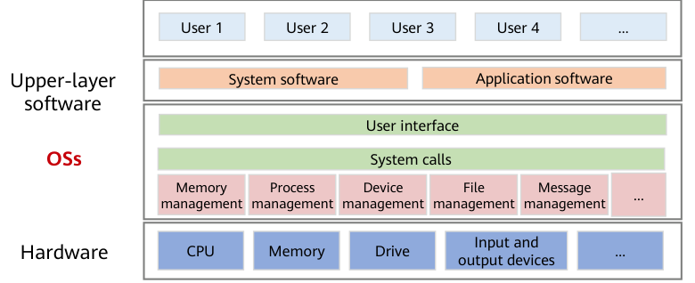
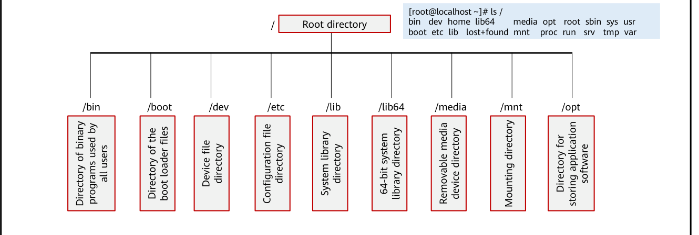

/bin to /opt)

---
fopen(), fclose(), fwrite(), fread()).
---
/, p. 219)| Directory | Official Function in HCIA-Computing (p. 219) |
|---|---|
/bin | Short for binary; stores frequently used binary programs/commands used by all users. |
/boot | Stores core files used for starting (booting) the Linux OS, including connection files and kernel image files. |
/dev | Short for device; stores peripheral device files of Linux. |
/etc | Stores all configuration files and subdirectories required for system management. |
/lib & /lib64 | Stores the system's most basic dynamic link libraries (DLLs / shared libraries) (32-bit and 64-bit). |
/media | Removable media devices (USB flash drives, CD-ROMs) automatically identified and mounted by Linux. |
/mnt | Temporary mount point for manual mounting of other file systems (e.g., mounting CD-ROM to /mnt). |
/opt | Stores additional third-party application software installed on the host (e.g., Oracle installation packages); empty by default. |

/media (where Linux AUTOMATICALLY identifies and mounts removable USB/CD-ROM devices) with /mnt (TEMPORARY mount point used by administrators for manual mounting)!